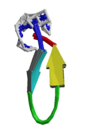

Laboratory 4 Tryptophan Zipper
Simulation of a protein

Your turn! So far we’ve given you most things that you need to run a simulation. Now that you are experts in submitting jobs and analyzing the output, let’s take some time to see what goes into making these input files.
Downloading the PDB- First, go to The Protein Data Bank. The Protein Data Bank (PDB) archive is the single worldwide repository of information about the 3D structures of large biological molecules, including proteins and nucleic acids. And all free!
- We are going to simulate a tryptophan zipper. It has a beta hairpin structure. Search "beta hairpin tryptophan zipper". A few results come up. Scroll down until you find the one identified as
1LE0 - Click Download files → PDB Format. This will save a .pdb file to your computer. It has several configurations for this protein contained inside.
- Go ahead and put it somewhere convenient on your local computer.
- Open up the file in VMD to view it
- Open the Tk Console under the Extensions menu
- In TkConsole, change directory to wherever you put your .pdb file.
- In TkConsole, set a variable
le0to store only the first peptide conformation:set le0 [atomselect top protein frame 0]
Instead of everyone choosing frame 0, let's have a variety of starting points. choose any configuration between 0 and 19. - Write a new pdb file saving only the protein (no NH2 will be saved) of the first frame
$le0 writepdb le0.pdb
- Load your saved le0.pdb structure into VMD using the File → New Molecule menu.
- Right-click on 1le0.pdb to remove it from the list of loaded molecules
- Recall that one of the files that NAMD requires is a protein structure file (psf). VMD will generate one of these for us.
- Open the automatic psf builder under Extensions → Modeling → Automatic PSF Builder
- Change the basename to anything you like.
le0_autopsfmight be a good choice - Leave the default topology files
- Click Load input files
- Click Guess and split
- Click create chains. (A message may pop up... this is fine.)
- Click OK
- Change the basename to anything you like.
- VMD should automatically load your new file. If not load them using File → New Molecule. Remember to load the psf file first, followed by the pdb.
- When the psf was generated, VMD added hydrogen to all of the amino acids. Hydrogens are not present in x-ray crystal structures because they are smaller than x-ray wavelengths and the single electron does not interact with x-rays
- We want to encapsulate our protein in a sphere of water. Do do this, we first need to download the file wat_sphere.tcl and put it into your working directory
- In TkConsole type
source wat_sphere.tcl
addsphere le0_autopsf - You should see output in the console with center of mass and radius values. Copy these down -- they'll be important later.
- Load the psf then pdb files (le0_autopsf_ws). You should see your protein surrounded by a minimal water sphere
- Log on to your computer and make a new directory, call it whatever you like.... "lab4" might be nice. Within this file, make another directory. Call it whatever you like... maybe "solvated"
- Download the configuration file from blackboard. Put this file (le0.conf) as well as the psf and pdb files you created into this directory. Also download the topology zip. After downloading it onto your local machine, unzip it, and put the whole file into the lab4 directory (not the solvated directory)
- There are a few parameters to modify in the configuration file:
- structure: this should be whatever you called your psf file
- coordinates: this should be whatever you called your pdb file
- parameters: ../topology/par_all27_prot_lipid.inp
- Set temperature: leave it at 280 for now.
- Under the heading "EXTRA PARAMETERS" there are five commented lines. Uncomment these and change the values from:
sphericalBCcenter 30.3081743413, 28.8049907121, 15.353994423
to your center of sphere coordinates (from the numbers you took note of above)
and
sphericalBCr1 26.0
to the correct radius (from the numbers you took note of above) - Minimization: 1000
- run: 2500
- Copy one of your old .pbs submission scripts from one of your old jobs into your working directory. This file will need a few modifications as well.
- The line beginning "export WD=" is followed by the location of your working directory. Change this to match your new working directory
- The line "export input=namd.conf" will need to be updated to your new .conf file name.
- The line beginning "export output=" will need to be updated with a new output logfile name.
- At the top, there is a line containing nodes=1:ppn=8... make sure it is ppn=8 and not ppn=1.
- Submit the job just as you have done in the past! Take note of the time when you submit it.
- Let the job go a little while then check in on the output. How long has it been running? How many steps has it taken? Estimate how long (wallclock time) it will take to finish the calculation. Can you adjust the calculation so that it run for about three hours before completion? Kill the job, and make this modification to the number of run steps in your configuration file.
- At this point you may want to finish the next step. Then return and submit this one right before you leave for the day.
- Repeat all of the above, except the solvation step to create a protein in vacuum.
- For this simulation, leave the five "EXTRA PARAMETERS" lines in the configuration file commented. (i.e. Leave the # in front of those lines so that NAMD doesn't read them)
- Adjust the number of run steps you used for your solvated protein to match the number of run steps in this protein in vacuo. (It won't take as long for this one to complete)
Analysis of Protein Data
Just as we did and RDF with Argon to determine structural properties, we can analyze our hairpin protein by calculating the distance between atoms over an entire trajectory.
It is easy to rationalize that our protein might behave something like this if the configurations are histogrammed over some reaction coordinate. The energy is low when the ends are close together. It needs to go through some higher energy transition state to flip around. Then fall into some other low energy state.Our protein doesn't flip, so we will only see half of this graph in our analysis. (The left half) One might also imagine that these plots will be altered if the protein is modified in some way: shifting it along the reaction coordinate or broadening the standard deviation of the distribution. You will calculate the distributions for three cases:
- Protein in vacuum at 280 K (Control)
- Protein in vacuum at 310 K
- Solvated protein at 280 K
Getting the distance data
- There are several pieces of data to analyze. Each of the trajectories are relatively large, so you will need to be patient loading them into VMD.
- Open the trajectory labeled vacuum 280 in VMD. Remember that you need to load the .psf file first, followed by the .dcd.
- Open TkConsole and navigate to the vacuum 280 directory.
- Now type the following:
source ../distance.tcl
dist {resid 1} {resid 12} 50 dist.csv hist.csv - This will create two files, dist.csv and hist.csv.
- dist.csv contains the distance between the 1st and 12th residues in the chain for each time step. The procedure calculates the center of mass for each amino acid first and uses the center of mass to calculate distance.
- hist.csv contains a histogram of all the distances separated into 50 bins. You can adjust the number of bins in the
dist {resid 1} {resid 12} 50 dist.csv hist.csvstatement above
- Repeat this process for each of the simulations.
- You will need to remove the molecule from the main window before proceeding to the next one
- You also need to navigate to the correct directory before running the dist command Otherwise it will overwrite your last hist.csv and dist.csv
- You can change the graphical representation of any of the trajectories: ball and stick models, licorice bonds, lines, etc. When you have a protein, you can also represent the molecules with a ribbon. This is especially useful when you are viewing the solvated protein.
- With your solvated protein trajectory loaded, go to Graphics → Representations. Under Drawing Method choose Lines.
- Now click Create Rep
- With this new representation under Selected Atoms type protein
- Under Drawing Method, choose an option that makes it easier to see the protein in amongst all those water molecules. This is a much better image when you are rendering figures.
- Load each of the datasets into Excel. It will probably open in Excel by default. Combine them all into one workbook (Make sure you keep track of which one is which)
- Make plots of the distance vs time data for each of the simulations. (The frames are captured every 200 fs)
- Calculate the average and standard deviation for each of the simulations. Can you rationalize the differences?
- Plot the histograms for each simulation. Are they what you expect?
- Knowing the populations of each configuration, plot the Gibbs free energy curve. Recall that the population on any state is given by the Boltzmann distribution.